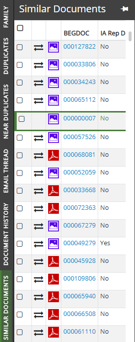
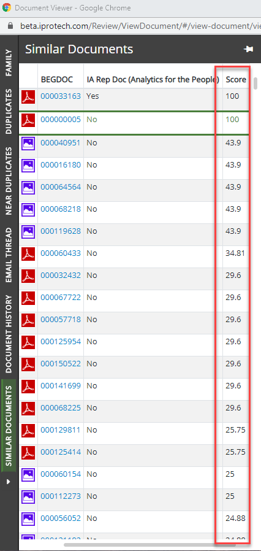
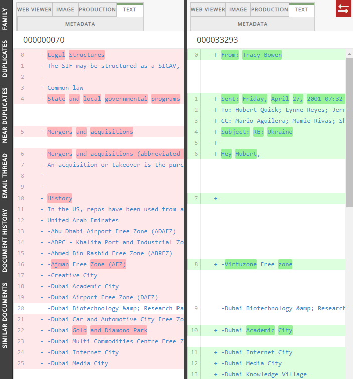

The Document Viewer displays when you select a document listed in the BEGDOC column of the Results tab. The Relationships panels display on the left of the Document Viewer. The panels consist of Family, Duplicates, Near Duplicates, Email Thread, and Similar Documents.
In addition, on the left of the viewer there is a Document History panel. For more information about this panel, see
Clicking a Relationships panel opens a list of documents that correspond to the particular relationship. The documents in the list are retrieved from the BEGDOC column of the Results tab.

In the Family, Near Duplicates, and Similar Documents panel, the Score column lists the confidence scores for those document relationships. The higher the score in a relationship, the more the document relates in that way to the one selected in the BEGDOC column of the Results tab.

For more information, see
Available within the Document Viewer is the Document Comparison tool, which allows you to compare the document selected in the Results tab to another document that displays in a Relationships panel described in the previous section.
To compare the document selected in the search Results tab with any of the other documents that display in a Relationships panel list, select the check box next to that document in the panel and click the  icon. The two documents then display side-by side in the Document Comparison tool of the Document Viewer:
icon. The two documents then display side-by side in the Document Comparison tool of the Document Viewer:

In the document on the left (the original document), anything that displays as missing or added is highlighted in red. In the document on the right (the compared document), anything that displays as new is highlighted in green.
Related Topics